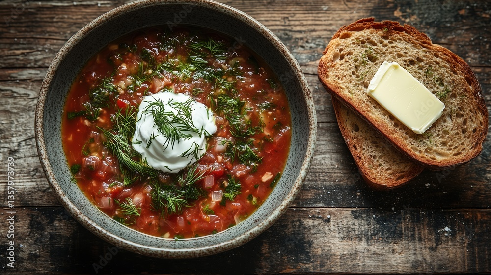

Подорож Україною
Вступ
Україна - це країна з чудовою природою і рідкісним колоритом традицій, країна лікувального м'якого мікроклімату, самобутнього народного мистецтва і глибокої слов'янської культури.

Клімат
Віддаленість України від океанів, континентальність Євразії та переважно рівнинний рельєф визначають клімат країни як помірно-континентальний, що поступово змінюється із заходу на схід. Зі збільшенням континентальності літо стає спекотнішим, зима холоднішою, а кількість опадів меншою. Такі комфортні кліматичні умови дають людям можливість насолоджуватися пляжним відпочинком на Чорному морі влітку і кататися на лижах на гірськолижних курортах засніжених Карпат взимку.
Часовий пояс
Час визначається як UTC+02:00, а влітку як UTC+03:00. Місцевий час називається київським і є частиною східноєвропейського часу. Перехід на літній час відбувається в останній тиждень березня о 03:00, коли час переводиться на годину вперед, і в останній тиждень жовтня о 04:00, коли час переводиться на годину назад; таким чином, годинник в Україні завжди на 1 годину випереджає годинник у Центральній Європі.
Транспорт
В Україні розвинені майже всі види сучасного транспорту:
- Залізничний
- Автомобільний
- Морський
- Річковий
- Повітряний
Але автомобільний транспорт значно переважає над іншими видами. Через Україну проходять 23 міжнародні дороги. Загальна протяжність автомобільних доріг становить 169 491 км. Основні автомагістралі країни: Київ - Львів, Київ - Харків, Київ - Брест, Дніпро - Нікополь, Київ - Одеса, Одеса - Миколаїв, Херсон, Біла Церква - Вінниця, Хмельницький, Дніпро - Запоріжжя.
Економіка
Ключові сфери
- Транспорт і логістика
- сільське господарство
- Металургія
- Харчова промисловість
Кухня

Українська кухня славиться своєю багатою історією і
різноманітністю смаків. Вона відображає культуру, традиції та
спадщину народу й нараховує багато рецептів.
Наприклад:
- Борщ
- Вареники
- Голубці
- Деруни
- Банош
Висновок
Незалежно від того, про що йдеться в розповіді, завжди варто пам’ятати, що Україна — це не просто країна на карті, а дім, який живе в серцях її людей.